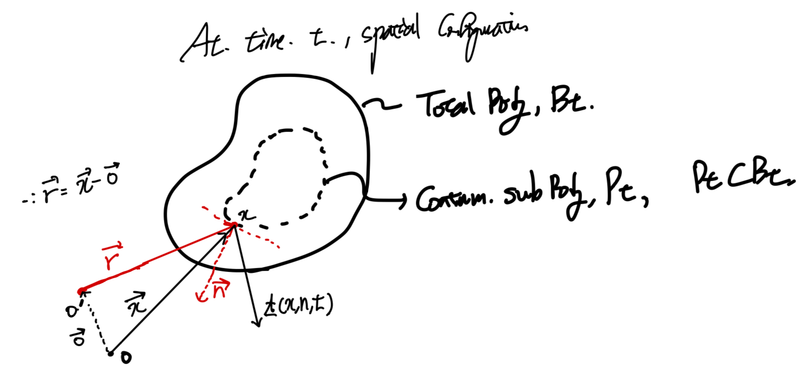
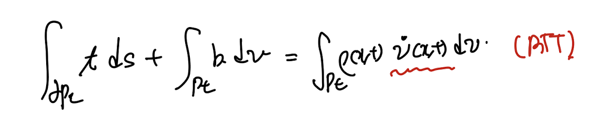
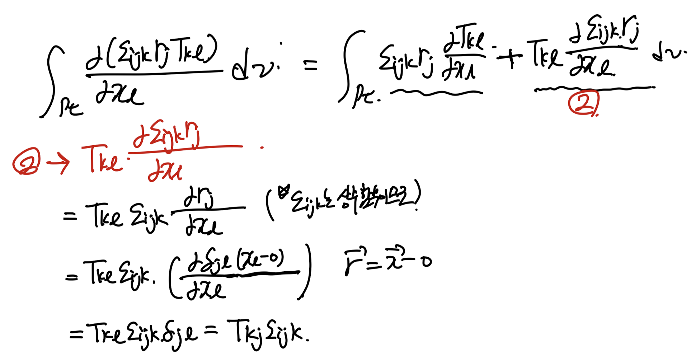
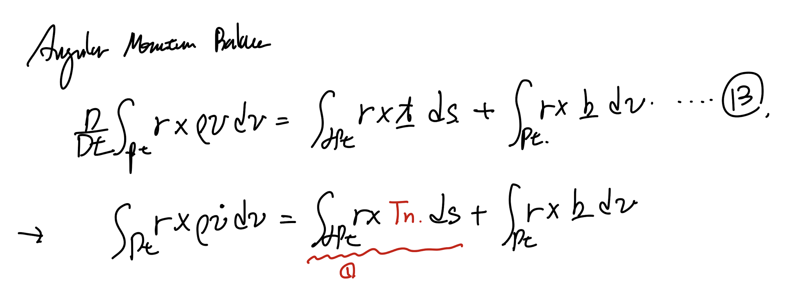

Continuum Body에 작용하는,
Linear momentum balance 식을 이번에는 전개해보자.
4.3 Linear momentum Balance.

spatial configuration of continuum body Bt and Pt
t : traction vector acting on the surface of Pt
b: body force vector per unit volume acting on the body Pt
쉽게 생각하면 뉴턴 제 2법칙
F = ma를 적용시키는 것이다.
여기서 힘은 surface force, body force가 존재하고,
우리는 surface force - traction(t)라고 정의하자.

여기서 우항의 경우,
scalar function per unit mass
reynolds transport theorem 식을 통해서 derivative를 안으로 짚어 넣을 수 있다.
(지난시간에 증명완료)

이후에 t = Tn 즉 Cauchy stress tensor (T)를 대입해주자.
그리고 divergence Theorem을 이용하면, 우리는 다음의 Cauchy's 1st eq of motion을
유도할 수 있다.

위 식은 전체 domain에 대해서 적분한 값이고,
이 값을 locally즉 미소 단위의 volume, surface에 적용시킨 식,
locally we can say.

4.4 Angular momentum Balance.
spatial configuration of continuum body Bt and Pt
똑같은 configuration으로 angular momentum 식을 전개해보자.
(주의할 점은 r 벡터는 moment 중심축 O'으로부터 변위벡터이다)
r = x - o
(r,x,0 전부 벡터)

13번식의 좌항의 경우 계속해서 쓰인다는 지난시간 11번 Reynolds Transport Therorem식에 의해서
다음과 같이 표현할 수 있다.

여기서, 우항 첫번째항을 살펴보자.
외적항의 미분을 전개하면, 평행한 부분이 나오므로
한개의 항으로 줄어든다.

이후에, 식을 쭉 전개하면 continutiy eq 8번식!!!
으로 소거항이 생긴다.

결론적으로 Reynold transport Theorem으로 간략하게 표현한식이 14번식.
지금 angular momentum balance 13번식에서 좌항을 간략하게 바꾸는 작업을 하였다.
이후 우항의 첫번째 항 1번식을 Cauchy stress tensor로 대입한 후에, 전개해보자.

이부분은 손으로 써보지 않으면 읽기만으로 이해할 수 가 없는
부분이므로, 꼭 손으로 써보시기를 추천합니다.
저렇게 복잡한 tensor, vector cross product가 엉켜 있을때는
무조건 index notation으로 전개해야 한다.

외적은 permutation symbol을 사용, 그리고 divergence theorem을 이용하여 volume integral로 전환하자.
이후 xl로 미분하는 항을 전개해주자.
전개하면 두항이 생기고, 두번째 항의 경우 permutation symbol이
미분 밖으로 나오게된다(상수함수이므로)

여기서 r벡터의 정의를 그대로 사용하면 우리는
Kronecker delta tensor로 간결하게 표현 가능하다.
최종적으로 지금까지 정리한식을 작성해보자.
그리고 index notation에서 다시 tensor symbol notation으로 전환해주자.

자 다시 원점으로 돌아가서 우리가 뭘 하고 있나?
Angular momentum balance식을 전개하고 있다.
(전개하게 되면 3개의 항이 존재하고, 첫번째항은 Reynolds transport Theorem으로 정리)
(두번째 Cauchy stress항은 index notation항으로 정리하였다)

즉 위 13번 식에서 1번항을 정리하였다.

이후에, 우항을 전부 좌항으로 넘기고 r 외적으로 묶어주자.
묶으면 Cauchy's 1st eq of Motion이 나오게 되므로 15번 식이 유도된다.

15번식이 의미하는게 무엇일까?
이해하기 위해서 index notation으로 다시 전환해보자.

결론적으로 Cauchy's stress tensor is symmetric.